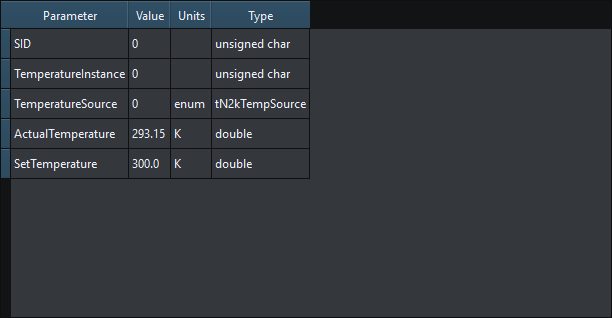
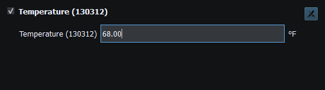
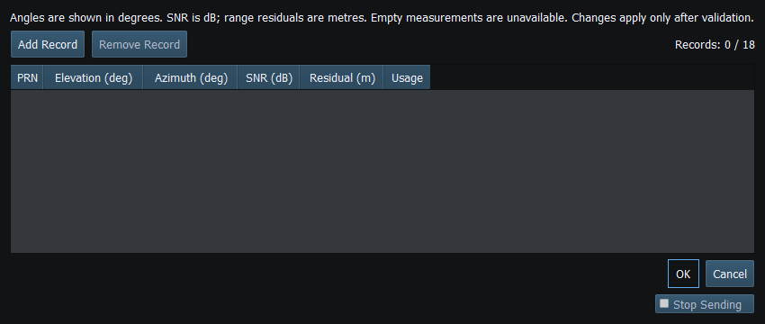
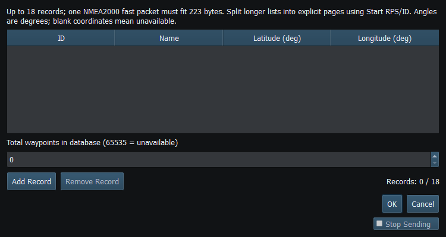

Property Editor exposes the selected instrument's canonical data. This view is valuable when the instrument's user-friendly display uses different units, fewer decimals or an unavailable label.
For example, 293.15 K corresponds to 20 °C and 68 °F. A preferred-unit change alters presentation, not the underlying Kelvin measurement. Coordinate displays may show degrees/minutes while the canonical decimal degrees retain more precision. Do not round canonical values simply to match a short label.
While typing, incomplete numeric text leaves the current value unchanged. Press Enter or leave the field to finish editing. Invalid or out-of-range input restores the current value in your selected units, including any newer RX/generator update received during editing. Values are not silently clamped.
Use the field's engineering range. Zero and negative values can be valid for some fields; unavailable, protocol error and reserved values are separate concepts. A visible Unavailable result is not an invitation to enter a raw wire sentinel.
Satellite, route and waypoint lists have message-specific limits. The bounded editor must reject an oversized fast packet rather than silently losing records. If values immediately change again after a valid edit, inspect generator Dispatch or incoming RX before assuming the editor failed.

Figure 21. The Property Editor retains canonical units and full precision independently of preferred display units. Click to enlarge.

Figure 22. An out-of-range committed edit restores the current model value rather than silently clamping. Click to enlarge.

Figure 23. Add, edit or remove satellite records, then accept the list or Cancel the draft. Click to enlarge.

Figure 24. Edit waypoint IDs, names and positions, then accept the list or Cancel the draft. Click to enlarge.
Main Window · Instruments and Generators · Layout Management · Templates · Object Tree · Themes and Appearance · Keyboard Shortcuts · Connection Troubleshooting · Enable, Dispatch and Sending · Route Overview · Engineering Units